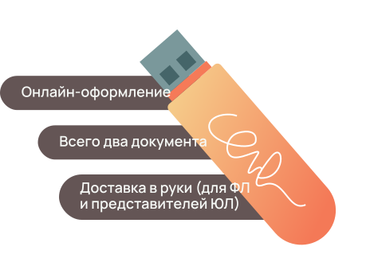

Электронная подпись
для любых задач

@@include('components/bem-blocks/_button.html',{
"color": "orange",
"text": "Подключить"
})
Электронная цифровая подпись (ЭЦП) — это сложная комбинация символов и знаков, которая равноценна обычной подписи от руки. Используется она в формате дистанционного документооборота и одинаково доступна как для юридических, так и для физических лиц.
ЭЦП упрощает получение услуг, делает возможным удаленное взаимодействие с государственными органами, позволяет оформлять сделки без личной встречи. И это далеко не все привилегии, которые дает электронная подпись.
Преимущества ЭЦП
В первую очередь электронная подпись удостоверяет подлинность интерактивного документа и идентифицирует личность подписавшего. Также она имеет юридическую силу практически во всех сферах деятельности, позволяет участвовать в государственных торгах, значительно ускоряет внутренний и внешний документооборот компании. Подделать цифровую подпись практически невозможно, а значит с помощью нее можно обезопасить себя от мошеннических действий.
Выделим еще ряд неоспоримых преимуществ эл. подписи.
Почему стоит выбрать нас
Экономия времени
Чтобы подписать договор, соглашение, акт сверки или другой документ, больше не требуется тратить время на личные встречи или поездки в офис, банк, ФНС и т.д. Цифровая подпись значительно упрощает и ускоряет взаимодействие с госслужбами, между сотрудниками одной компании, контрагентами. Подписание проходит быстро, после чего документ сразу вступает в юридическую силу.
Забота об окружающей среде
Большинство документов, заверяемых электронной подписью (ЭП), не требуют дополнительного оформления на бумаге. А это значит, ее потребление значительно сократится, что благоприятно отразится на окружающей среде. Помимо этого, руководству компании не придется тратить дополнительные средства на печать, хранение, курьерскую доставку бумажных документов.
Простота получения
Как мы уже сказали, оформлять ЭЦП могут как физические, так и юридические лица. Главное определиться, для каких целей она нужна. Исходя из этого можно выбрать простую (только для физлиц), усиленную неквалифицированную или квалифицированную электронную подпись. Последняя считается наиболее надежной и предоставляет больше бизнес-возможностей.
Нужна помощь с выбором и покупкой?
Оставьте заявку и мы поможем подобрать тариф и ответим на все ваши вопросы.
Возможности ЭЦП
Спектр возможностей электронной подписи напрямую зависит от того, какой вид вы выбрали.
Простая подпись
Подойдет для того, чтобы удостоверять личность, совершать сделки купли-продажи, подавать заявление в ВУЗ, регистрировать недвижимость, защищать авторские документы от плагиата и т.д.
Эта подпись довольно полезна в повседневной жизни, но юридическую силу имеет только при прямом указании закона или соглашении сторон.
Также простая цифровая подпись не может использоваться в документах, которые содержат гостайну.
Неквалифицированная ЭП
Будет актуальна для заверения документов в рамках одной компании.
С помощью нее физлицам также можно удостоверять личность, осуществлять сделки купли-продажи, создавать заявки для аккредитации и участия в торгах.
Квалифицированная электронная подпись
Считается наиболее совершенной.
Ее обладатели могут удаленно подавать отчетность в налоговый и пенсионный фонды, регистрировать КТТ, осуществлять закупки, заниматься таможенным оформлением товара, подавать заявления в суд, вступать в электронные торги, получать доступ к информационным государственным системам и совершать множество других действий.
Этапы получения ЭЦП
Что нужно, чтобы получить усиленную квалифицированную ЭЦП: пошаговая инструкция.
Соберите пакет документов, в который должны входить: СНИЛС, паспорт гражданина России, ИНН, а также учредительные документы компании и выписка из ЕГЮРЛ если вы — юридическое лицо.
Обратитесь в аккредитованный удостоверяющий центр, с которым необходимо подписать договор. Стоимость оформления квалифицированной электронной подписи будет зависеть от тарифов удостоверяющего центра.
Заранее осуществите покупку USB-токена, куда будет записан ключ.
Установите на компьютер специальную программу, которая в дальнейшем будет обеспечивать криптографическую защиту вашей подписи и документов в Сети.
Через указанное количество дней получите в удостоверяющем центре USB-токен с установленным ключом и прилагающийся к нему сертификат.
Помимо этого, оформляться квалифицированная электронная подпись может и на онлайн-портале «Госключ».
Несложно заказывать простую и неквалифицированную ЭП. Чтобы оформить первую, достаточно самостоятельно пройти регистрацию в сервисе ЭДО. Для получения неквалифицированной эл. подписи можно обратиться в любой удостоверяющий центр. Набор документов потребуется стандартный.